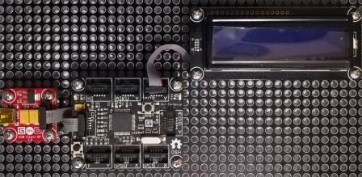

Version: 0.7.0
CharacterDisplay is connected as followed on Cerberus:

| CharacterDisplay | Mainboard |
|---|---|
| Socket Type Y | Socket 3 |
using System.Threading;
using Bauland.Gadgeteer;
using GHIElectronics.TinyCLR.Pins;
namespace TestCharacterDisplay
{
static class Program
{
static void Main()
{
// CharacterDisplay connected on Socket 3 (Type I) of FEZ Cerberus mainboard.
CharacterDisplay characterDisplay =
new CharacterDisplay(FEZCerberus.GpioPin.Socket3.Pin3,
FEZCerberus.GpioPin.Socket3.Pin4, FEZCerberus.GpioPin.Socket3.Pin5,
FEZCerberus.GpioPin.Socket3.Pin6, FEZCerberus.GpioPin.Socket3.Pin7,
FEZCerberus.GpioPin.Socket3.Pin8, FEZCerberus.GpioPin.Socket3.Pin9)
{
BacklightEnabled = true
};
characterDisplay.Clear();
int i = 0;
while (true)
{
i++;
characterDisplay.CursorHome();
characterDisplay.Print("Value:" + i);
Thread.Sleep(500);
}
}
}
}